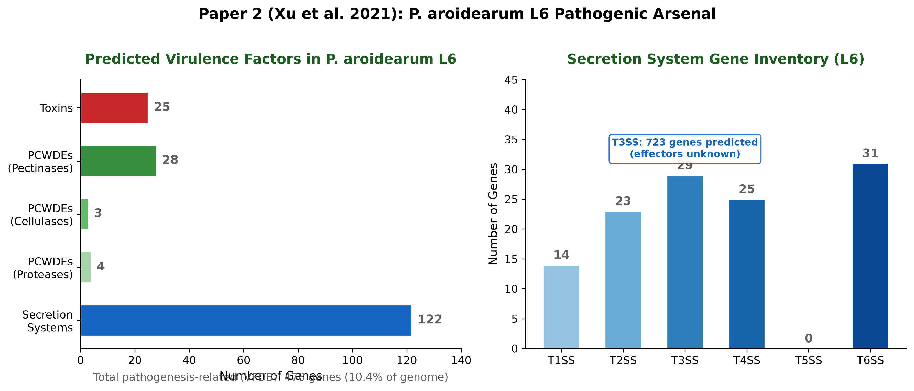
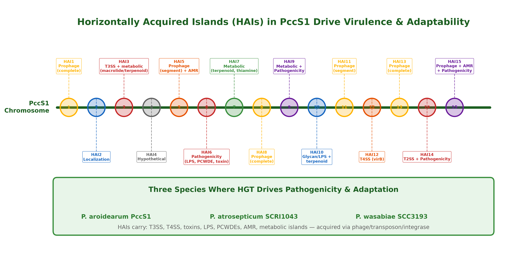

Pectobacterium Genomics
Comparative Insights from Two Landmark Studies
Paper 1: Yang et al. (2026) Plant Disease 110:821–832
Paper 2: Xu et al. (2021) Front. Microbiol. 12:679102
Overview
Two complementary studies use whole-genome sequencing and comparative genomics to resolve Pectobacterium taxonomy, catalog virulence factors, and reveal how horizontal gene transfer shapes pathogenicity in this globally important soft-rot genus.
- 78 strains analyzed in Paper 1 (14 newly isolated + 64 public)
- 19 strains in Paper 2 (complete genome of P. aroidearum L6 + 18 references)
- Both converge on ANI ≥95–96% & isDDH ≥70% as the genomic gold standard for species delineation
- Both expose misidentified genomes in GenBank
Three Summary Pages

Page 1: 3 subspecies → 3 species via ANI/isDDH

Page 1: Thresholds & cross-paper comparison table

Page 2: Toxins, PCWDEs, secretion systems in L6

Page 2: 15 HAIs on PccS1 chromosome

Page 3: Three car cluster types across genus

Page 3: CarR bypasses CarI for carbapenem but not virulence